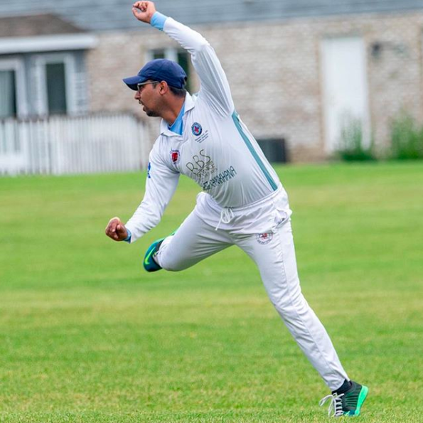
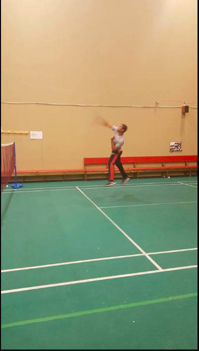

HOBBIES
Cricket and Badminton


The sport I play is Cricket. This is one of my biggest hobbies. I play this almost every weekend. I have been playing since my childhood. Currently, I play for a couple of different clubs locally. I'm also affiliated with a few leagues in the Chicago area.
What is Cricket
Cricket is a bat-and-ball game played between two teams of eleven players on a field at the center of which is a 20-meter (22-yard) pitch with a wicket at each end. The batting side scores runs by striking the ball bowled at the wicket with the bat, while the bowling and fielding side tries to prevent this and dismiss each player. When ten players are dismissed, the innings ends and teams swap roles. The game is adjudicated by two umpires and supported by scorers and a third umpire in international matches.
Secondly, I love playing Badminton as well. I played a lot back in Pakistan. Since moving to the United States, I haven't played as often, but whenever I find time, I head to a local place in Naperville. It's a fun sport and an amazing workout for the whole body.
Playing Cricket
This is not traditional cricket—it's an indoor version with different rules using a tennis ball wrapped in electrical tape.